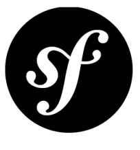
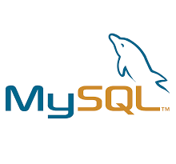

Curriculum Vitae
dane osobowe:
personal details:
- Dominik Pieczaba
- Baza sto8 Dominik Pieczaba
- 533-167-917
- baza.sto8@gmail.com
- 23 kwietnia 1982
- Struga 4/28
25-566 Kielce - https://github.com/zeppell108
umiejętności programistyczne:
programming skills:
-

- 
-

- 
-


Wykształcenie:
-
Back-End Developer Coders Lab - szkoła programowania Sierpień - Październik 2016
Zakres tematyczny: PHP, MySQL, jQuery, JavaScript, Symfony2, OOP, TDD 240 h
-
Mgr inż. metalurg Akademia Górniczo-Hutnicza w Krakowie Październik 2003 - Lipiec 2008 Odlewnictwo 5 lat
-
Inż. informatyk Wyższa Szkoła Handlowa w Kielcach Marzec 2002 - Luty 2005
Informatyka w zarządzaniu 3 lata
doświadczenie zawodowe:
| Firma | Stanowisko | Okres zatrudnienia | Opis | |
|---|---|---|---|---|
| Organization.pl Sp. z o.o. | Junior Back-End Developer | Sierpień – Wrzesień 2017 1 miesiąc |
Współtworzenie stron w Symfony2 | |
| Arena 108 Sp. z o.o. | Stażysta | Kwiecień – Czerwiec 2016 2 miesiące |
Współtworzenie strony w Wordpress | |
| Zakład Odlewniczo-Mechaniczno-Handlowy „Wójcik” | Kierownik Odlewni | Kwiecień – Sierpień 2015 4 miesiące |
Zarządzanie grupą kilkunastu pracowników odlewni | |
| Odlewnia Świdnica Sp. z o.o. | Inżynier produktu i procesu | Sierpień 2012 – Kwiecień 2015 2+ lata |
Odpowiedzialność za procesy produkcyjne oraz produkty w odlewni | |
| Capricorn S.A. | Młodszy inżynier produktu oraz referent ds. jakości | Listopad 2011 – Lipiec 2012 9 miesięcy |
Wyszukiwanie na rynku materiałów metalowych do produkcji oraz wytwarzanie wewnętrznej dokumentacji jakościowej | |
| Artystyczna Odlewnia Metali Art-Odlew Sp. z.o.o | Inżynier procesu | Wrzesień – Grudzień 2010 4 miesiące |
Odpowiedzialność za wdrożenie nowej technologii produkcyjnej w odlewni | |
| Politechnika Rzeszowska | Asystent dydaktyczno-naukowy | Grudzień 2008 – Grudzień 2009 1 rok |
Udział w projekcie naukowym PBZ-MNiSW-03/I/2007 ”Opracowanie technologii wytwarzania elementów konstrukcyjnych części gorącej silników lotniczych metodą krystalizacji kierunkowej”, prowadzenie zajęć ze studentami |
umiejętności dodatkowe:
-
J. angielski – The European Language Certificate TELC (level B1), lepszy w mowie niż w piśmie
-
Prawo jazdy kat. B
Wyrażam zgodę na przetwarzanie moich danych osobowych zawartych w mojej ofercie pracy dla potrzeb niezbędnych do realizacji obecnych i przyszłych procesów rekrutacji (zgodnie z Ustawą z dnia 29.08.97 o ochronie danych osobowych, Dziennik Ustaw Nr 133 Poz. 883)